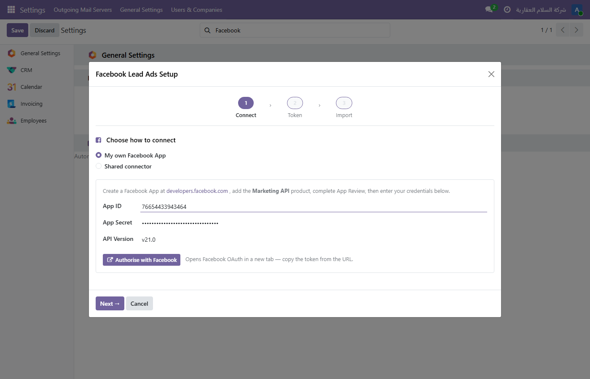
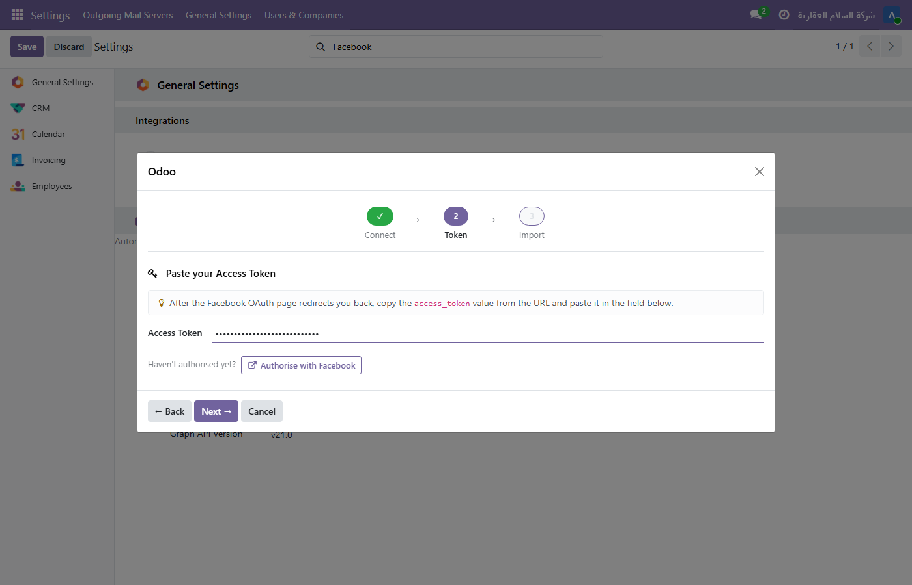
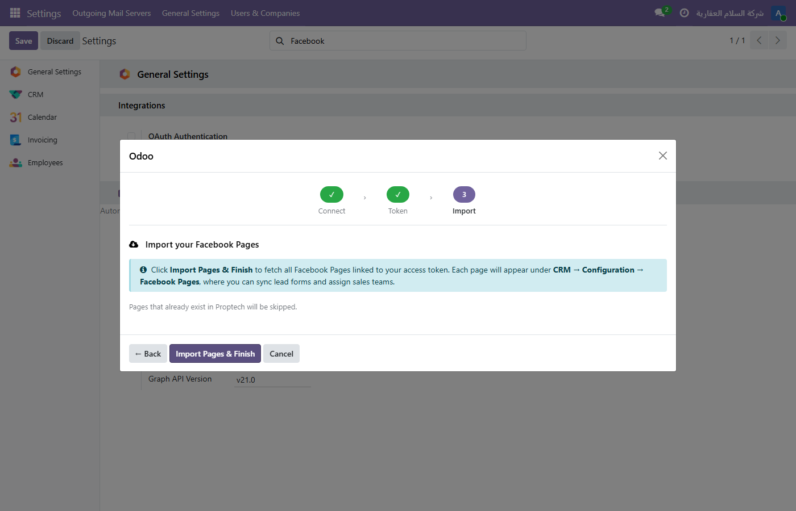
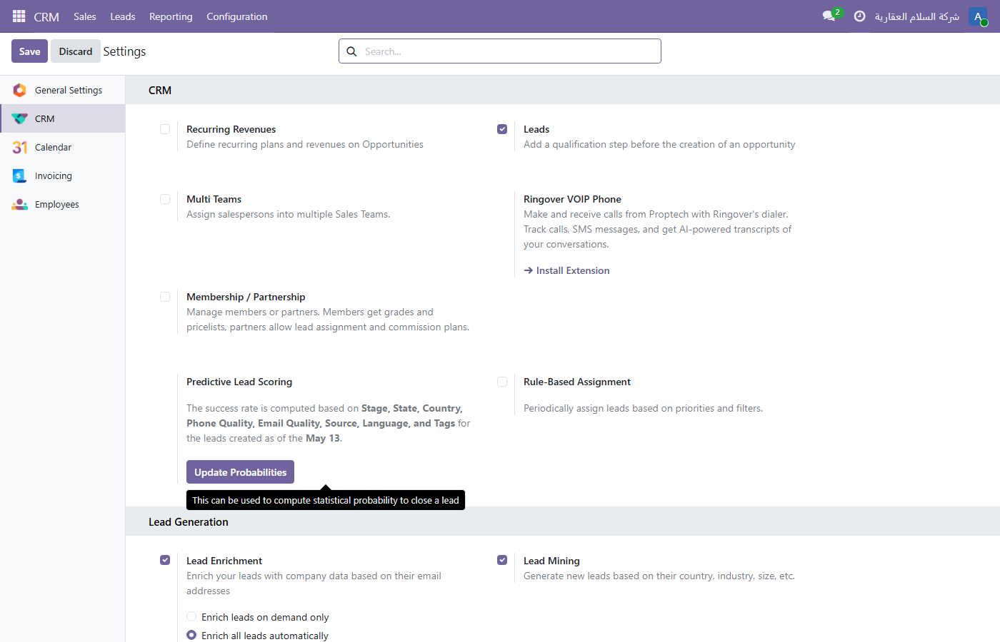
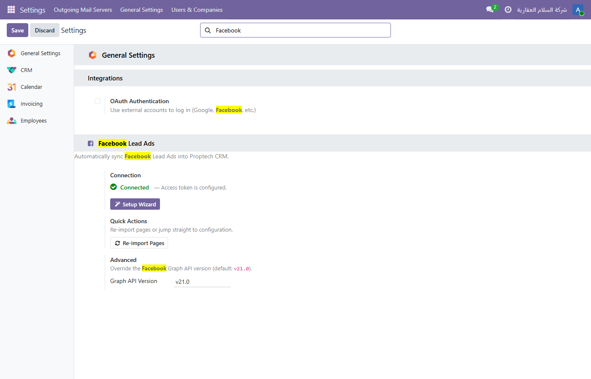

Automatically import Facebook Lead Ads into your Odoo 19 CRM pipeline — no CSV exports,
no manual copy-paste, no missed leads. Connect your Facebook Pages through a guided
setup wizard, map form fields once, and every new lead arrives directly in Odoo with
full campaign attribution and UTM tracking.
Odoo 19CRMFacebook Lead AdsUTM AttributionAuto-SyncMulti-PageMulti-Form
Key Features
🔄
Automatic Hourly Sync
A built-in scheduled action polls every configured lead form each hour. New submissions appear in Odoo CRM within minutes — hands-free.
🧙
Guided Setup Wizard
A 3-step dialog walks you from OAuth authorisation to imported pages in under two minutes. No developer knowledge required.
👥
Flexible Field Mapping
Auto-Map Fields handles name, email, phone, company, and job title out of the box. Every other Facebook question can be mapped to any CRM lead field.
🎯
Full UTM Attribution
Captures the Campaign, Ad Set, and Ad that generated each lead — so your team can report ROI without leaving Odoo.
📄
Multiple Pages & Forms
Connect unlimited Facebook Pages. Each page can carry multiple lead forms, each with its own mapping, sales team, and UTM defaults.
🔒
Secure Credential Storage
App secrets and access tokens are stored as masked password fields and are never exposed via the UI or RPC once saved.
⚡
On-Demand Sync
Don't want to wait for the cron? Hit Sync Leads Now on any individual form to pull fresh leads instantly.
🛠
Reliable API Calls
Automatic retry with exponential back-off and a PostgreSQL advisory lock prevent duplicate imports even when cron runs overlap.
🚀 Getting Started — Setup Wizard
Navigate to Settings → Facebook Lead Ads → Setup Wizard to launch the
wizard. It guides you through three steps: Connect → Token → Import.
1
Connect — Choose your authorisation method
Select how you want to authenticate with Facebook:
My own Facebook App — Enter your App ID, App Secret, and optionally a custom Graph API version, then click Authorise with Facebook. A Facebook OAuth tab opens; once authorised you will be redirected back.
Shared Connector — Uses a pre-approved Facebook App managed by your organisation — no App Review required. Click Connect with Shared Connector.
Click Next → to proceed.
2
Token — Paste your Access Token
After the Facebook OAuth redirect, copy the access_token value
from the browser URL and paste it into the field shown. The token is stored
encrypted and never displayed in full again.
If you have not authorised yet, a shortcut button re-opens the OAuth page without losing your progress. Click Next → once the token is pasted.
3
Import — Fetch your Facebook Pages
Click Import Pages & Finish. The wizard calls the
Facebook Graph API (me/accounts) and creates a
Facebook Page record in Odoo for every page your token can access.
Pages that already exist are skipped.
✓
Done — Setup Complete
A confirmation screen shows how many Facebook Pages were imported.
Click Open Facebook Pages → to jump straight to
CRM → Configuration → Facebook Pages and start syncing lead forms.

Step 1 — Connect: choose My own Facebook App or Shared Connector, enter App ID and Secret, then click Authorise with Facebook.

Step 2 — Token: paste the access_token from the Facebook OAuth redirect URL.

Step 3 — Import Pages: click Import Pages & Finish to discover all Facebook Pages linked to your token.
Tip: If you already configured your App ID previously, the wizard opens
directly on Step 2 (Token) so you can update your access token without repeating the
credential entry.
📄 Facebook Pages
After the wizard, all imported pages appear in
CRM → Configuration → Facebook Pages. Each card shows the page name,
its Facebook Page ID, how many lead forms are linked, and a quick-action
Sync Forms button.

Facebook Pages — each page shows the Page ID, linked form count, and a Sync Forms shortcut.
Page record fields
Identity
Page Label — human-readable name shown in Odoo
Page ID — the numeric Facebook Page ID
Access Token — page-level token (masked)
Lead Forms tab
Inline list of all synced forms
Leads column — count of imported CRM leads per form
Fetch Leads After — timestamp of last successful sync
Click any form row to open the full form configuration
📄 Lead Form Configuration
Open a lead form from the page's Lead Forms tab to configure mapping,
sales team assignment, and UTM defaults.
Action Buttons
Sync Leads Now — immediately fetches new leads from this form without waiting for the hourly cron.
Refresh Fields — re-fetches the form's question list from Facebook so new questions appear in the mapping tab.
Auto-Map Fields — automatically matches common Facebook fields (full name, email, phone number, company name, job title) to the correct Odoo CRM fields.
Facebook Source
Form Name — the Facebook lead form name (read-only)
Facebook Form ID — the internal numeric ID used for API calls
Access Token — overrides the page token for this form if needed
Fetch Leads After — only leads created after this date/time are downloaded on the next sync
CRM Assignment
Sales Team — all leads from this form are assigned to this team
Responsible — default salesperson assigned to each imported lead
UTM Tracking tab
Define default UTM values applied to every lead imported from this form when the
Facebook payload does not carry its own UTM data. Supports Campaign,
Source, and Medium.
Field Mapping tab
Each row maps one Facebook form question to an Odoo CRM lead field. Rows are created
automatically by Refresh Fields and filled in by
Auto-Map Fields. You can add, edit, or delete rows manually.
Facebook Field Key — the question key as returned by the Graph API (e.g. full_name, email)
Odoo Field — the target field on crm.lead (dropdown of all available fields)
📋 CRM Lead — Facebook Ads Tab
Every lead imported by this module gets a Facebook Ads tab on its CRM
form with three information groups:
Source
Facebook Page — which Page the form belongs to
Lead Form — the specific form that captured the lead
Received On — timestamp of the Facebook submission
Is Organic — True if the lead came through an organic post, not a paid ad
Campaign Attribution
Campaign — Facebook campaign name/ID
Ad Set — Facebook ad set (audience targeting)
Ad — specific ad creative that generated the lead
Technical
Facebook Lead ID — the unique numeric ID from Facebook's Graph API; used as a deduplication key to prevent importing the same lead twice.
Deduplication: If a lead with the same Facebook Lead ID already
exists in Odoo, the sync skips it automatically — you will never get duplicate records
regardless of how many times the cron or manual sync runs.
⚙ Settings — Facebook Lead Ads
Go to Settings → Facebook Lead Ads to see the connection status and
access quick actions at any time.

Settings page — connection status indicator, Setup Wizard button, Re-import Pages shortcut, and API version override.
Connection status — shows a green Connected badge when an access token is stored, or a red Not connected indicator when it is missing.
Setup Wizard button — re-opens the wizard at any time to update credentials or re-authorise.
Re-import Pages button — fetches any new Facebook Pages added to your account since the last import (visible only when connected).
Graph API Version — override the default v21.0 if you need to pin to a different Facebook API version.
🔧 Technical Notes
Requires an outbound HTTPS connection from the Odoo server to graph.facebook.com.
Facebook Graph API — default version v21.0, configurable in Settings per installation.
Incremental sync: the Fetch Leads After timestamp is updated after each successful sync so only new leads are downloaded on subsequent runs.
A PostgreSQL advisory lock (pg_try_advisory_xact_lock) prevents duplicate imports when scheduled action runs overlap.
All Graph API calls use automatic retry with exponential back-off (up to 3 attempts).
Credentials are stored via ir.config_parameter as masked fields — never exposed in RPC responses.
Compatible with Odoo 19 Community and Enterprise.
Dependencies: crm, utm.
Facebook App requirements: Your Facebook App must be set to
Live mode and have passed App Review for the permissions
leads_retrieval, pages_manage_ads,
pages_read_engagement, and ads_management before it can
retrieve leads from production ad accounts. Test/Development mode works for sandbox
testing only.
📞 Support
For questions, bug reports, or feature requests, contact us at
info@skymuknon.com.
Please include your Odoo version, module version, and a description of the issue when
reaching out — this helps us respond faster.